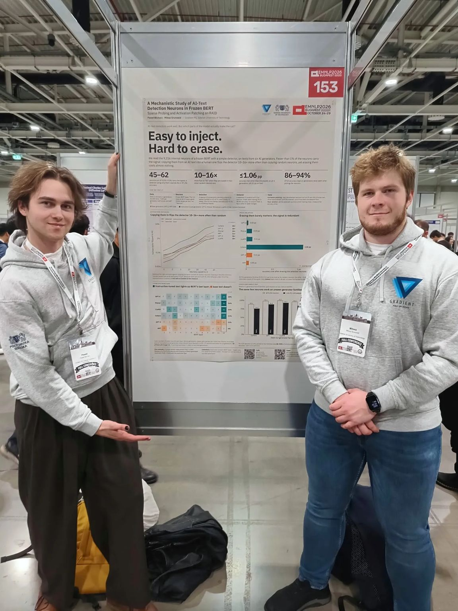

A Mechanistic Study of AI-Text Detection Neurons in Frozen BERT: Sparse Probing and Activation Patching on RAID
Where does a frozen BERT keep the difference between human and AI text? Out of 9,216 neurons, a stable set of 45 to 62 is enough for near-ceiling detection. Copying them into human text flips the detector 10 to 16 times more often than random neurons, while erasing them costs almost nothing. Easy to inject, hard to erase.